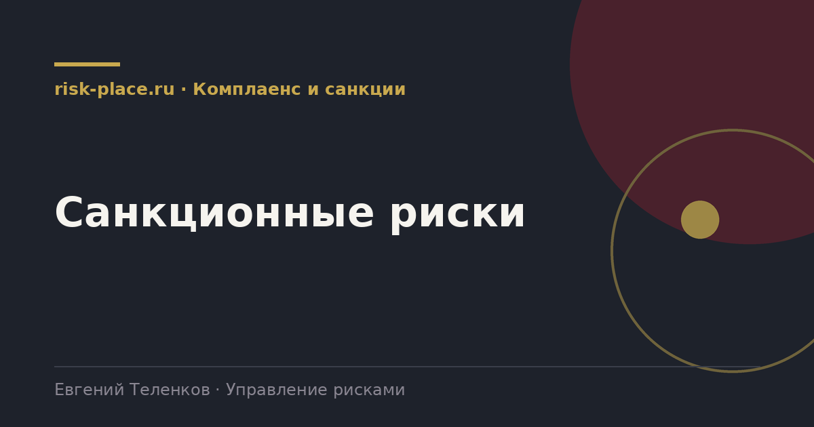

Главная · Библиотека · Комплаенс и санкции · Санкционные риски
Библиотека · Комплаенс и санкции
Направление, где цена ошибки выражается не штрафом, а потерей канала целиком.

Первый слой это прямые ограничения в отношении самой компании, ее собственников или руководителей. Здесь риск понятен и управляется в основном юридически и структурно.
Второй слой практически важнее для большинства. Это риск, возникающий из-за контрагентов, банков, перевозчиков и цепочек поставки. Компания может не быть под ограничениями, но лишиться платежа, груза или партнера, потому что кто-то в цепочке решил, что связь с ней слишком рискованна. Этот эффект избыточного соблюдения бьет по бизнесу чаще, чем формальные запреты.
Практический перечень точек отказа.
| Точка | Что происходит | Что снижает риск |
|---|---|---|
| Платеж | Задержка, запрос документов, возврат средств, закрытие счета | Несколько банков, заранее подготовленный комплект документов, проверка назначения платежа |
| Поставка оборудования и запчастей | Отказ производителя, срыв на таможне, отзыв гарантии | Квалификация альтернативных поставщиков, склад критичных позиций |
| Логистика | Отказ перевозчика или страховщика, смена маршрута | Несколько логистических схем, договоры с резервными операторами |
| Программное обеспечение и облачные сервисы | Прекращение поддержки, отключение лицензий | План замещения по критичным системам, локальные копии данных |
| Партнерство и контракты | Расторжение, отказ от продления, требование гарантий | Оговорки в договорах, диверсификация клиентской базы |
Санкционные режимы меняются часто, и любая внутренняя инструкция устаревает. Поэтому надежнее строить не список запретов, а процесс. Кто проверяет, по каким источникам, с какой периодичностью, кто принимает решение в спорном случае, где хранится обоснование.
И вторая вещь. Правовая квалификация конкретной сделки в этой области требует профессиональной юридической оценки применимых режимов, включая иностранные. Задача риск-функции не подменить юристов, а обеспечить, чтобы ни одна сделка из зоны риска не проходила мимо этой оценки.
Частые вопросы
Одна форма для любого вопроса
Расскажем о ближайших датах, предложим формат под ваш состав участников и назовем порядок бюджета.
Предпочитаете почту — напишите на info@risk-place.ru. Адрес: Москва, улица Скаковая, 32с2.
 risk-
risk-